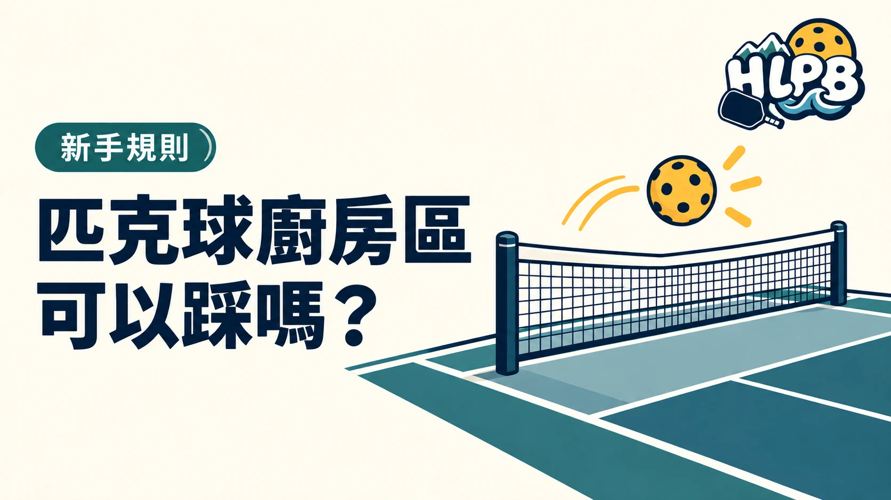

廚房區到底能不能踩？
可以。非截擊區俗稱廚房區，是球網兩側各 7 英尺的區域。球落地後，你可以進入區內回擊，也可以站在裡面等待。
什麼時候會犯規？
截擊是球還沒落地就直接擊回。截擊時，身體、衣物或球拍碰到非截擊區或界線就是犯規。即使擊球時站在區外，隨後因慣性踩入，也會犯規。
記法很簡單：落地後可進廚房，空中截擊要站穩在區外。第一次上場可先讀新手指南，再到花蓮球場列表找適合的場地。
資料參考：USA Pickleball 規則摘要。實際活動及賽事以其規定為準。
跟著影片看觀念
看非截擊區內落地擊球與截擊的差別。舊教材的細節以現行規則為準。
最後查證：2026-09-28｜資料來源：USA Pickleball 規則摘要
返回文章列表